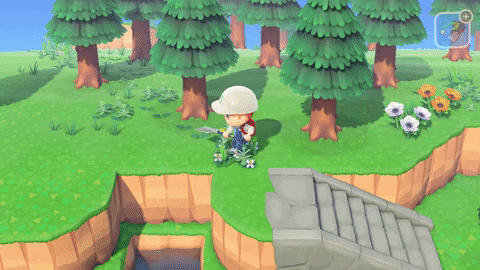
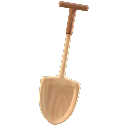
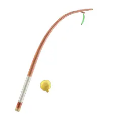
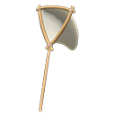
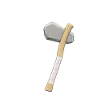
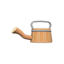
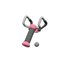
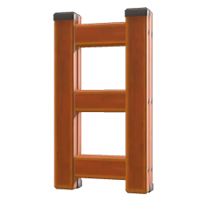
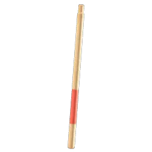

Creado por Ana Gabriela Soroiu
Es un juego creado para diferentes plataformas como la Nintendo Switch, Nintendo 3DS o Wii el cuál nuestro personaje se muda a un nuevo pueblo/isla junto a unos vecinos que son animales, y en dónde vivirás allí tu maravillosa y tranquila vida. Este juego cuenta con una saga y nos encontramos con los siguientes juegos:
En esta página hablaremos sobre el último Animal Crossing, explicando algunas mecánicas, sobre algunos personajes y todo lo que necesitas saber para poder disfrutar este gran juego.
Este juego de toda la saga tiene un gran cambio en comparación al resto, y es que si bien en los anteriores te mudabas a un pueblo, en este nos apuntamos al plan de Nook Inc, el cuál nos ofrece irnos a una isla desierta junto a otros dos futuros vecinos. En esta isla, al llegar, Toom Nook nos ayudara con el tema vivienda (cobrándonos con Millas o bien Bayas) y te nombrará el/la portavoz de la isla, dejandote así poder decorar la isla a tu gusto.
La decoración tanto de la isla como de nuestra propia casa es un tema muy importante a tener en cuenta, ya que la mayoria de jugadores en lo primero que se centran en esta clase de juegos es como decorar su isla, y es que existen muchas maneras de decorarlas, si quieres un estilo más natural, más de ciudad o etc, pero para lograr todo esto antes debemos saber que limitaciones o qué podemos hacer. A diferencia de otros juegos de la saga, éste es el más completo en cuanto a las decoraciones, y es que este juego gracias a que se nos introducen las montañas y los distintos niveles que existen, podemos crear un sinfin de decoraciones diferentes. Gracias a esta nueva mecanina que se añade, se nos permite a través de una applicación del Nookófono puedes jugar con con estos distintos niveles, añadir cascadas o ríos dónde deseemos e incluso añadir caminos por doquier.
Lo más importante a tener en cuenta en el juego son las herramientas, ya que gracias a ellas podremos hacer todo, desde conseguir bayas hasta poder decorar la isla, por ello son imprescindibles y vamos a ver todas con las que nos podemos encontrar.
| Herramienta | Descripción | Materiales | Mejoras |
|---|---|---|---|
|  | Sirve para poder desenterrar cualquier tipo de cosa, ya sean fósiles, pegarle a las piedras para obtener materiales (o bayas si tienes mucha suerte), romper rocas y plantar árboles o flores. |
-5 ramas de árbol
-1 pepita de hierro |
|
|  | Sirve para poder pescar todos aquellos peces de cualquier río, lago o del mar. | 5 ramas de árbol |
|
|  | Sirve para cazar todos aquellos insectos que te encuentres por la isla. | 5 ramas de árbol |
|
|  | Sirve para conseguir materiales de los árboles y, dependiendo de la mejora, incluso puedes cortar un árbol. | 5 ramas de árbol |
|
|  | Sirve para regar todas las plantas e incluso poder conseguir a partir de plantarlas en un patrón concreto, que hibriden. | 5 madera flexible |
|
|  | Sirve para disparar piedras a objetos como globos que vuelan por el cielo u otros objetos. | 5 tablas rígidas |
|
|  | Sirve para poder subir o bajar de cualquier nivel en el que te encuentres en la isla | -4 madera normal
-4 madera rígida -4 madera flexible |
No dispone de mejoras. |
|  | Sirve para poder saltar los ríos. | 5 madera flexible | No dispone de mejoras. |